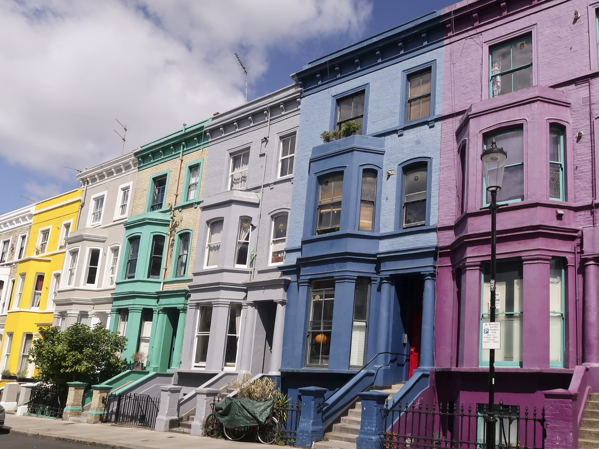
Mercati, case color pastello, muri dipinti, la Stele di Rosetta e il binario di Harry Potter: cinque mezze giornate se cambiamo programma.
Perché andarci
Sono le alternative pronte se piove, se un biglietto salta o se le ragazze vogliono altro.
Ognuno di questi quartieri vale mezza giornata. Quattro su cinque si raggiungono con la Hammersmith & City line, che parte da Aldgate East, sotto l'hotel, e corre verso ovest senza cambi; Shoreditch è a piedi. Qui sotto, per ogni quartiere, il giorno giusto e la strada più semplice.
Tempi stimati, porta a porta fino alla stazione di arrivo.
Camden e King's Cross si uniscono a piedi lungo il canale, in 40 minuti (p. 206). British Museum e King's Cross sono a una fermata di Piccadilly line, da Russell Square.
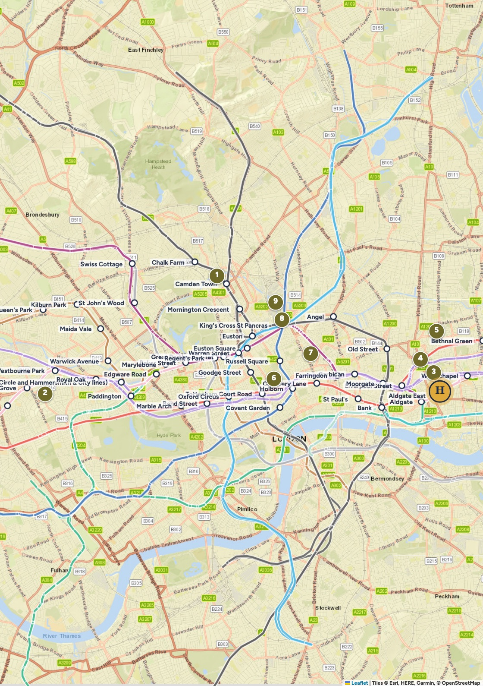
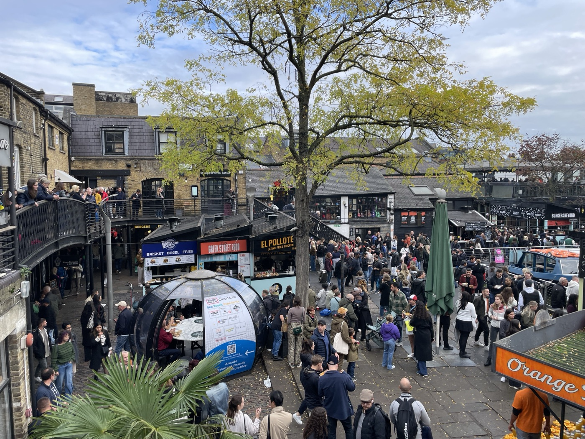
Quartiere · 1
Il mercato più alternativo di Londra: borchie, vintage, cibo di strada da tutto il mondo e un canale con le chiuse ancora aperte a mano.
Camden Market non è un mercato solo, ma un labirinto di cortili tra Camden High Street e Chalk Farm Road. Camden Lock Market sta accanto alla chiusa, con i banchi di cibo del West Yard. Lo Stables Market, il più grande, occupa vecchie scuderie in mattoni con negozi nelle arcate. Hawley Wharf, la parte più nuova, ha le food hall al coperto e gli ascensori. Si entra gratis, tutti i giorni.
"Camden Lock" è un soprannome: la chiusa si chiama Hampstead Road Locks ed è del 1818-1820. Sono due vasche affiancate, ed è l'unica coppia del Regent's Canal in cui sono sopravvissute entrambe. Da qui il canale scende di 29 metri, con altre undici chiuse, fino al Tamigi a Limehouse.
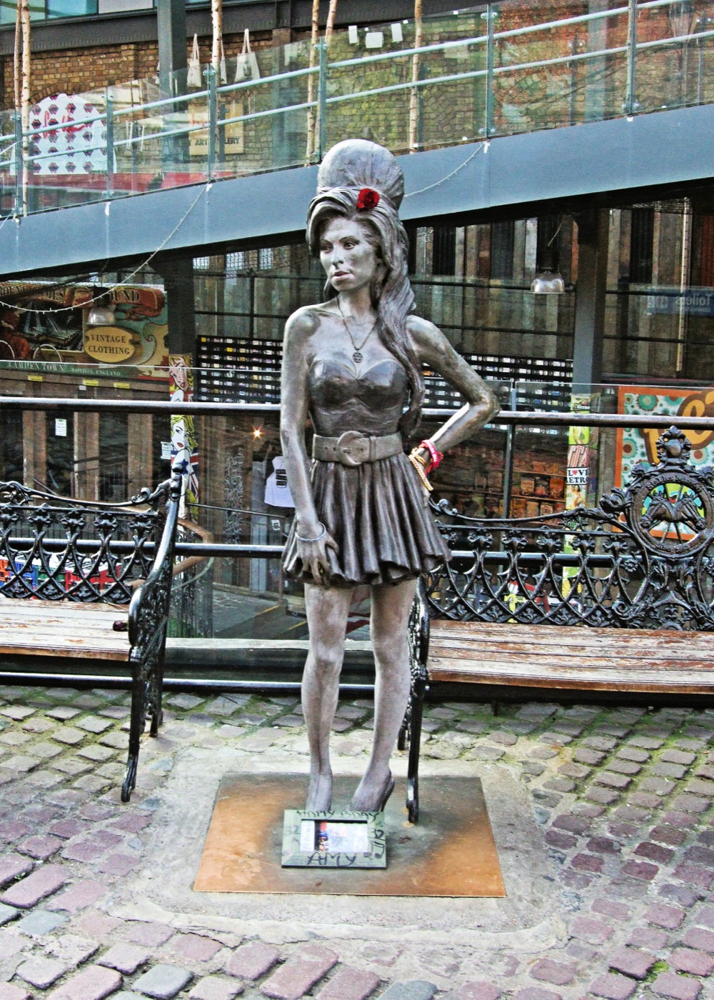
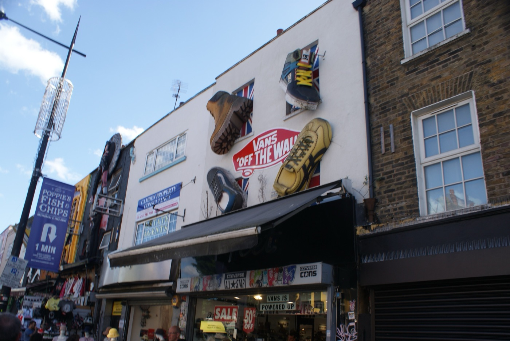
La statua di Amy Winehouse e le insegne giganti di Camden High Street.
Per le ragazze. Lo Stables Market è il regno dei vestiti vintage e della moda alternativa. In mezzo ai banchi c'è la statua di Amy Winehouse, in bronzo, a grandezza naturale, con lo chignon alto e la mano sul fianco: è stata inaugurata dal padre il 14 settembre 2014, il giorno in cui la cantante, che viveva a Camden, avrebbe compiuto 31 anni. Lungo Camden High Street le facciate dei negozi sono decorate con sculture enormi: scarpe, draghi, jeans.
Andateci la mattina: alle 10 si gira bene, dal primo pomeriggio nel weekend c'è la calca. Per tornare, invece della metro affollata, seguite il canale verso est fino a King's Cross (vedi p. 206). Si legge che la stazione di Camden Town nel weekend a volte è solo in uscita: da verificare prima di partire.
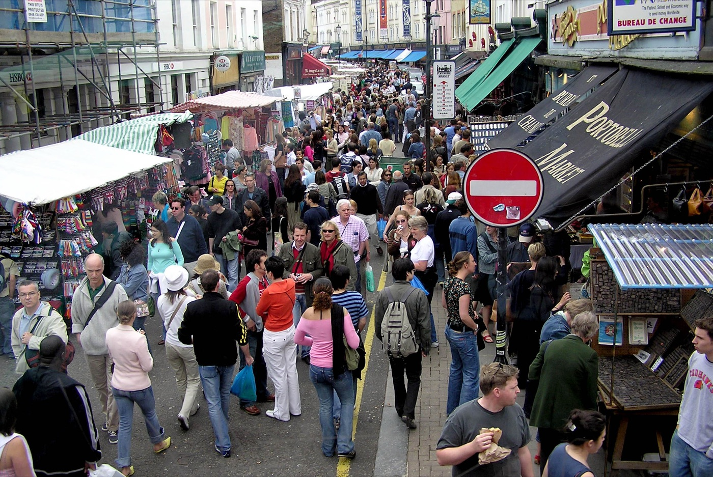
Quartiere · 2
Case color confetto, il mercato di Portobello Road e la porta blu di un film del 1999.
Portobello Road Market è lungo quasi due chilometri e cambia faccia lungo la strada. All'estremità sud, verso Notting Hill Gate, ci sono antiquari, gallerie e arcate: il comune lo chiama il più grande mercato di antiquariato del Regno Unito. Al centro, tra Elgin Crescent e Talbot Road, frutta, verdura e cibo. Sotto il cavalcavia della Westway, verso Ladbroke Grove, vestiti vintage e roba di seconda mano.
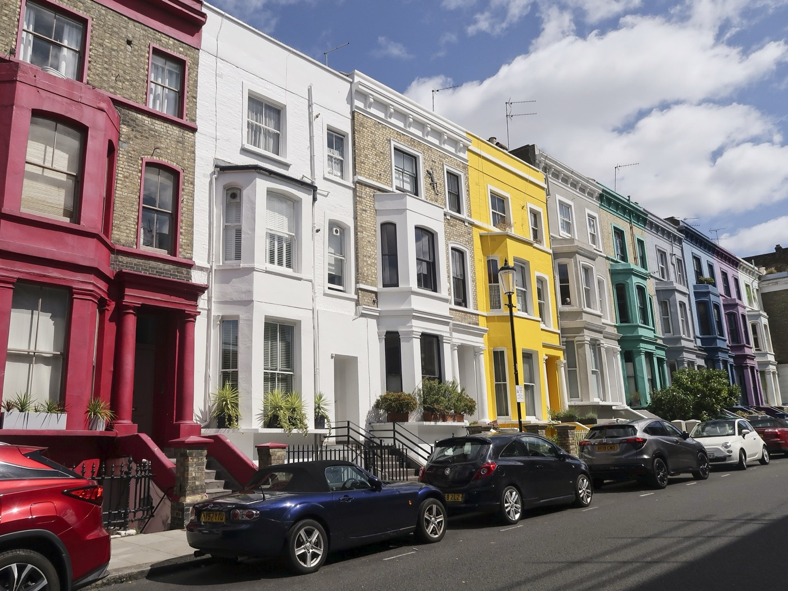
Fino a qualche decennio fa queste case erano tutte bianche.
Le case colorate. Le vie più fotografate sono Lancaster Road, con viola e blu da una parte e pastelli dall'altra, Elgin Crescent e Westbourne Park Road. In St Luke's Mews, una stradina acciottolata, c'è la casa rosa del film Love Actually. Sono case private: foto dal marciapiede, a voce bassa.
Il film. La porta blu di Hugh Grant in Notting Hill è al 280 di Westbourne Park Road. La libreria del film era ispirata a quella di 13 Blenheim Crescent: oggi è la Notting Hill Bookshop, aperta tutti i giorni.
Il sabato partite presto: verso le 9 i banchi sono aperti e si cammina ancora. Comprate prima di arrivare in fondo: gli stessi oggetti tornano più volte lungo la strada, e si confrontano i prezzi.
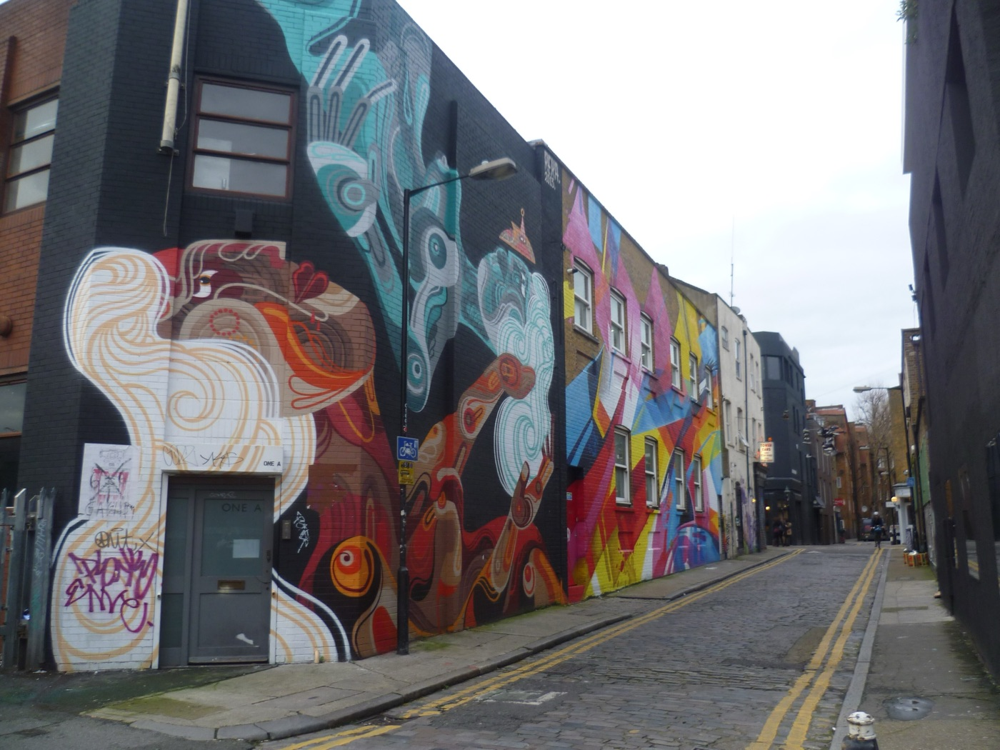
Quartiere · 3
Il quartiere dei muri dipinti comincia a tre minuti dall'hotel: la nostra via, Osborn Street, diventa Brick Lane.
Salendo Brick Lane i murales cambiano ogni poche settimane: non ci sono due visite uguali. In Hanbury Street c'è l'airone gigante dell'artista belga ROA, dipinto nel 2010 in circa otto ore e difeso dagli abitanti quando qualcuno voleva cancellarlo. In Ebor Street una scritta di Ben Eine lunga 45 metri. Su Holywell Lane, sul tetto del locale Village Underground, ci sono quattro vecchi vagoni della metro usati come studi d'artista: si vedono da Shoreditch High Street.
Quasi tutti i suoi lavori in zona sono stati cancellati, rovinati o coperti. Le guide dei fan ne segnalano un paio dietro il plexiglas in Rivington Street, ma non è confermato che si vedano ancora: se capitate lì, guardate, senza farne la meta.
Un centro commerciale fatto con circa 60 container navali riciclati, su due piani, aperto nel dicembre 2011: doveva durare cinque anni. Sopra una ventina di banchi di cibo (burger, gyros, sushi, tacos, churros, tiramisù), sotto negozi di streetwear. A 15 minuti a piedi dall'hotel.
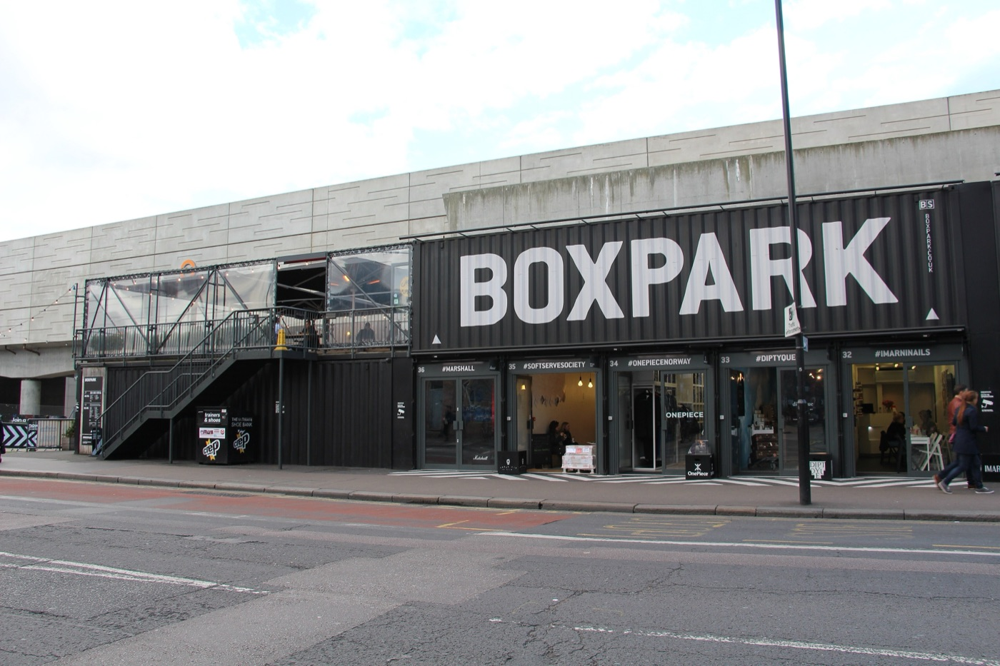
Una via di negozietti vittoriani degli anni Sessanta dell'Ottocento che la domenica si riempie di fiori e piante, con i venditori che gridano i prezzi. Negli anni Settanta la volevano demolire: l'hanno salvata gli abitanti. Intorno, una sessantina di botteghe, caffè e gallerie. Arrivate presto: il sito ufficiale consiglia la mattina per i fiori migliori.
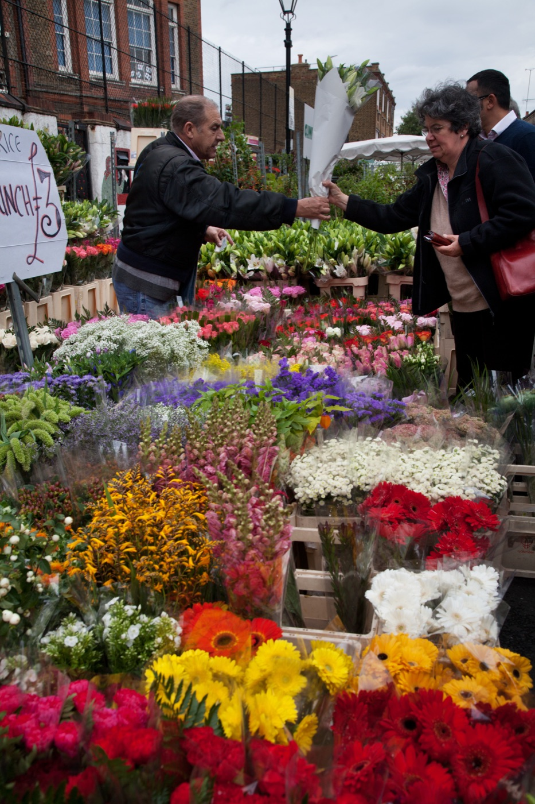
Dishoom Shoreditch, 7 Boundary Street: caffè in stile Bombay, ££. Di giorno si prenota per qualsiasi numero di persone, dopo le 18 solo per gruppi da 6 in su: in 8 si prenota sempre, fino a 4 mesi prima. Chi non prenota fa 30-60 minuti di coda. Beigel Bake, 159 Brick Lane: bagel caldi al banco, aperto giorno e notte, da mangiare in piedi. E i banchi di Boxpark, dove ognuno sceglie il suo.
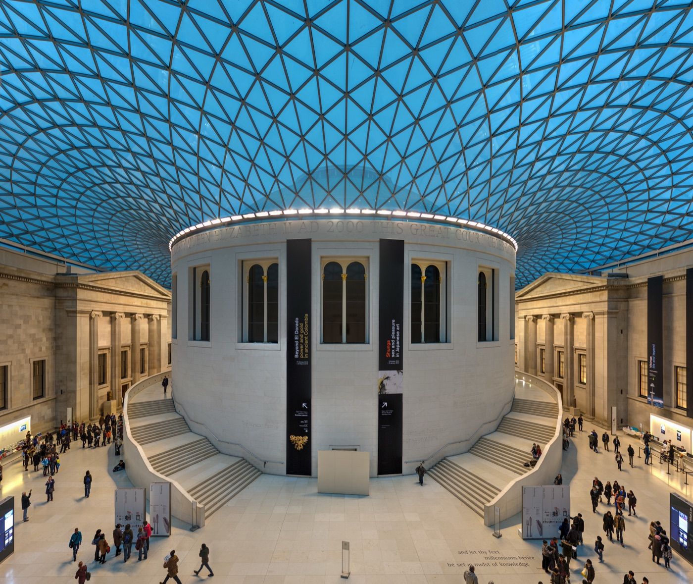
Quartiere · 4
Due milioni di anni di storia, gratis. In due ore si vedono i pezzi che tutti conoscono.
Si entra nella Great Court, il cortile coperto aperto nel dicembre 2000: il tetto ha 3.312 pannelli di vetro triangolari, tutti di forma diversa, perché la sala di lettura rotonda al centro non è nel mezzo del cortile.
I numeri sono quelli delle sale, dalla mappa ufficiale di maggio 2026. Cominciate alle 11, quando apre la sala 10.
Nella Great Court, i Court Cafés (10-17, panini e dolci, £). A due minuti dal museo, PizzaExpress al 30 di Coptic Street, in un vecchio palazzo d'angolo, ££, prenotabile online.
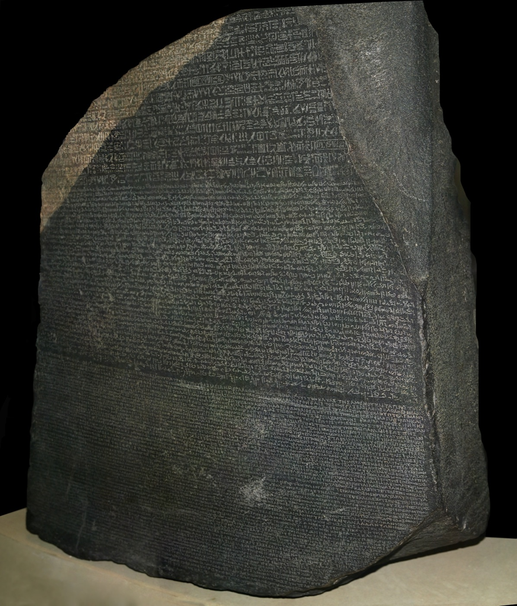
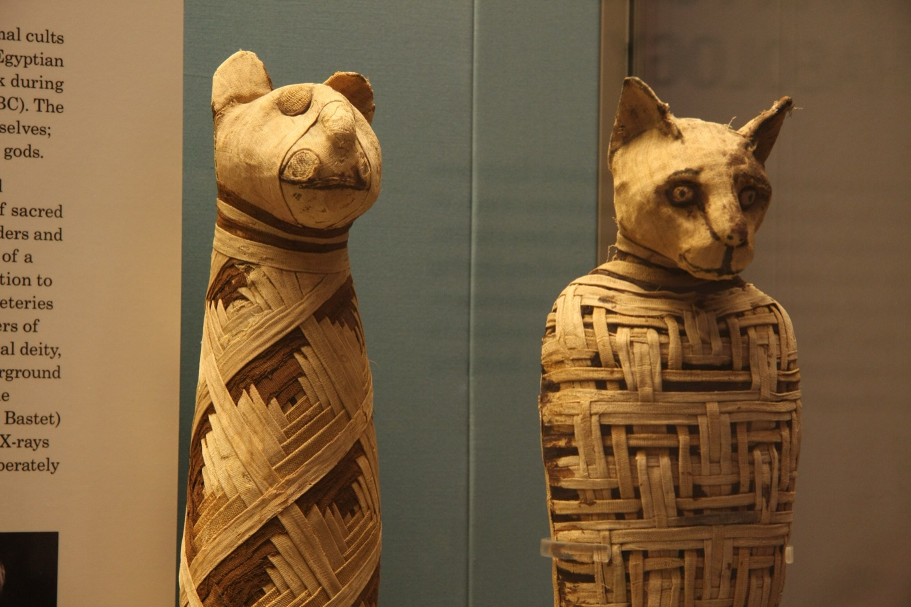
Le mummie di gatti delle sale egizie. La Stele di Rosetta ripete lo stesso decreto in tre scritture: geroglifico, demotico e greco.
Prenotate il biglietto gratuito, scaricate e stampate a casa le schede-gioco per famiglie del museo (al banco non sempre ci sono) e lasciate la Great Court per ultima, per il caffè. Il museo sta ridisegnando l'ala ovest, dove sono la Stele, il Partenone e gli Assiri: alcune sale potrebbero chiudere, da ricontrollare a gennaio.
Il pezzo forte è Mail Rail: un trenino senza conducente che dal 1927 al 2003 portava la posta sotto Londra. Oggi si sale sui vagoncini e si fa un giro di circa 20 minuti nelle gallerie originali sotto il centro di smistamento di Mount Pleasant. Il treno è incluso nel biglietto, a orario.
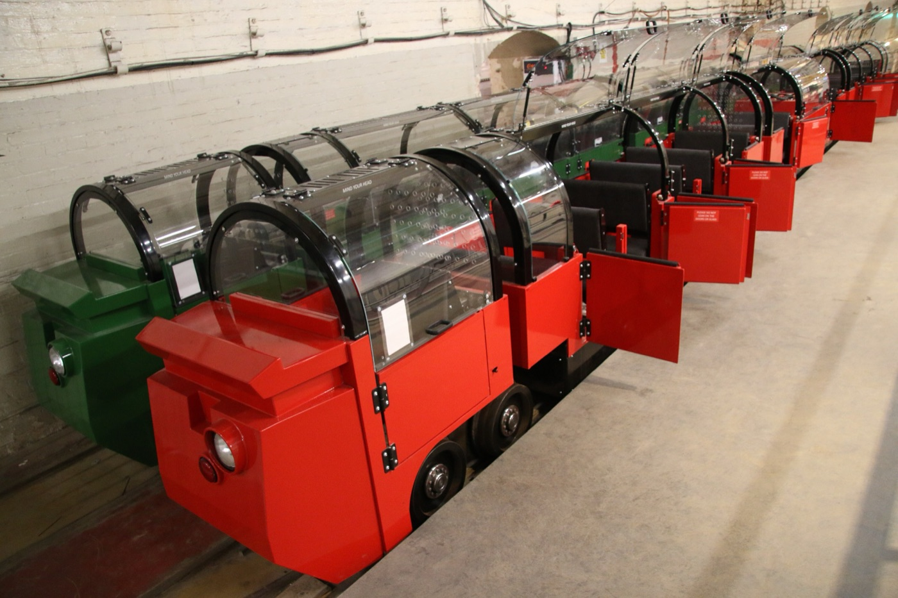
Quartiere · 5
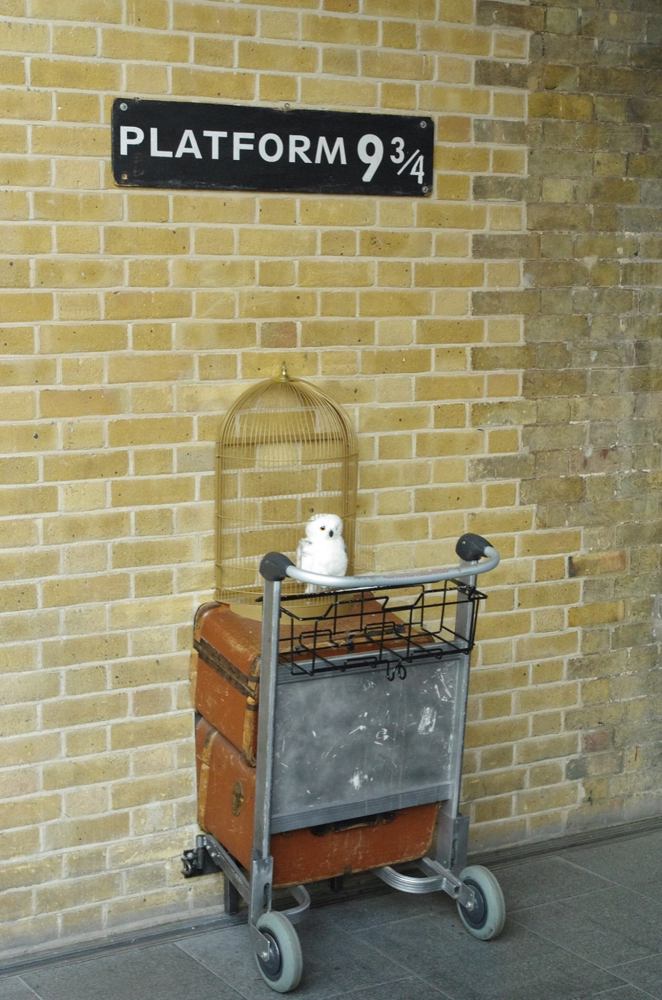
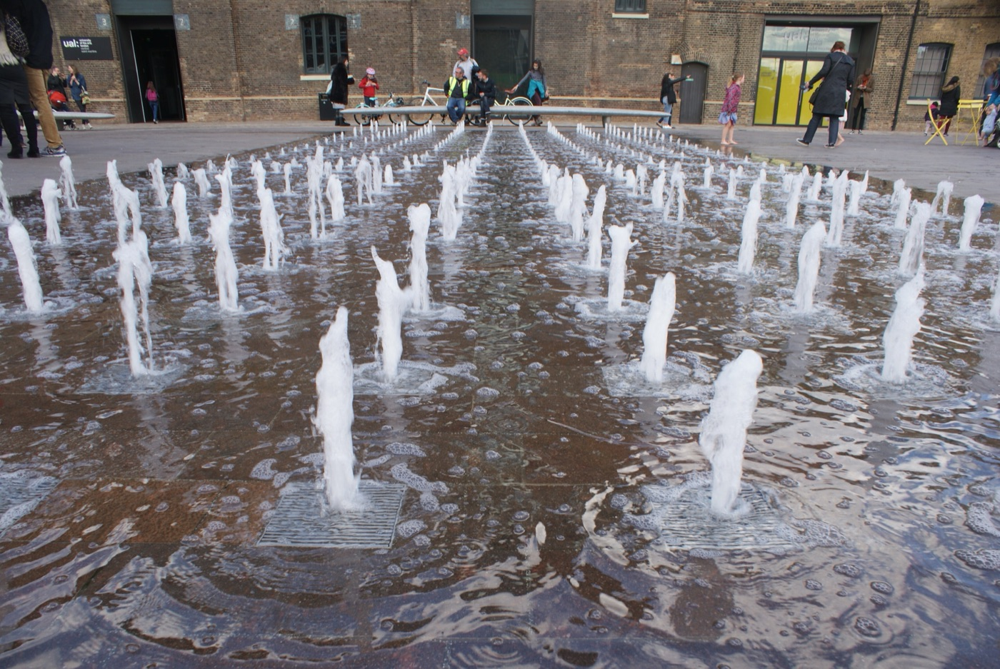
Il binario 9¾ di Harry Potter e, dietro la stazione, un vecchio scalo del carbone diventato piazza.
Nell'atrio della stazione c'è il Binario 9¾: mezzo carrello che sparisce nel muro, con la sciarpa della casa scelta. La foto con il proprio telefono è gratis; i fotografi del negozio la vendono stampata (prezzi da verificare). Accanto, l'Harry Potter Shop: lun-sab 8-22, dom 9-20. La coda va da 20 minuti a oltre un'ora: venite all'apertura.
Dieci minuti a nord, Granary Square ha più di mille getti d'acqua che si accendono a ritmo, e gradinate che scendono sul canale. Accanto, Coal Drops Yard: magazzini del carbone degli anni Cinquanta dell'Ottocento, riaperti nel 2018 con una cinquantina di negozi sotto due tetti che si "baciano" (lun-sab 11-19, dom 11-17). Sul canale è ormeggiata Word on the Water, una libreria su una chiatta olandese degli anni Venti, aperta 12-19.
Dishoom King's Cross, 5 Stable Street: stesse regole di quello di Shoreditch, in 8 si prenota sempre, ££. A Coal Drops Yard ci sono tapas, curry e locali veloci.
Dalla chiusa di Camden si segue l'alzaia del Regent's Canal verso est: circa 2,5 km, 40 minuti, tra case galleggianti, altre due chiuse e i gasometri vittoriani rimontati sul canale. Si arriva a Granary Square. Fatelo con la luce: a febbraio fa buio verso le 17.
Crediti fotografici
Foto da Wikimedia Commons, pubblicate con licenze Creative Commons o in pubblico dominio. Mappe: Esri, HERE, Garmin e i contributori di OpenStreetMap. Linee della metro: OpenStreetMap.
Appunti